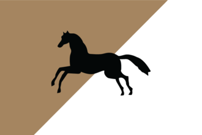

{kind=link}
{kind=link}
| 北非 | 创建缩略图出错：文件丢失 得土安 创建缩略图出错：文件丢失 塞拉 |
| 东非 |
| 中非 |
| 东南非 |
| 西非 |
| 西南非 |
 | |
|---|---|
| 突尼斯 | |
| 政府等级 | |
| 主流文化 | |
| 首都 | |
| 政体 | |
| 国教 | |
| 学派 | |
| 科技组 | |
| 突尼斯的理念 |
此信息可能已落后版本，最后更新于1.35 ----
|
| +20% 桨帆船只作战能力 −25% 海军损耗 |
| +25% 海军上限
|
|
|


突尼斯（英文：Tunis）是一个位于马格里布的国家。在1444年开局，突尼斯保证  费赞的独立。突尼斯尊崇的是伊斯兰的
费赞的独立。突尼斯尊崇的是伊斯兰的  马利克学派。如果突尼斯不复存在，那么它可被任何突尼斯或柏柏尔文化的国家重建。
马利克学派。如果突尼斯不复存在，那么它可被任何突尼斯或柏柏尔文化的国家重建。
|
|
仅当DLC我们的海、黄金世纪或北方雄狮开启时可用。 |
劫掠海岸是一项海军能力，允许拥有该能力的国家的舰队劫掠其他非同信仰国家的海岸以获得  战利品（金币）和
战利品（金币）和  水手。这项能力可经由国家理念、政府改革等方式获得。部分国家除了不同信仰国家之外，还允许劫掠同信仰国家的海岸。
水手。这项能力可经由国家理念、政府改革等方式获得。部分国家除了不同信仰国家之外，还允许劫掠同信仰国家的海岸。
劫掠海岸可以提供显著的收入和水手池加成，并作为损害其他国家经济的一种手段。
脚本代码位于：/Europa Universalis IV/decisions/MaghrebiCountryFormations.txt。
|
|
这条信息可能已不适合当前版本，最后更新于1.29。 |
自古以来突尼斯就是东马格里布地区的中心。 一旦我们控制这座大城市和她的腹地，我们就能把整个地区重新统在一面旗帜之下。
脚本代码位于：/Europa Universalis IV/events/GC_Mission_Events.txt。
|
|
这条信息可能已不适合当前版本，最后更新于1.34。 |
臭名昭著的海盗兼提督巴巴罗萨·海雷丁抵达了阿尔及尔，并试图在当地建立一个的海军基地，以便进一步对地中海进行无情地掠夺。海雷丁名义上是土耳其苏丹的部下，若我们愿意支持他对基督徒的圣战，这位令人畏惧的船长愿意考虑加入我们。
触发条件
|
只触发于
完成 |
选择条件
让他统治阿尔及尔。
将他任命为海军大将。
给予他阿尔及尔的自治权。
| |
突尼斯作为马格里布文化组的国家，可以成立  安达卢西亚。
安达卢西亚。
|
|
这条信息可能已不适合当前版本，最后更新于1.35。 |
曾几何时，伊比利亚全境为光荣的安达卢西亚穆斯林所统治。让我们洗刷基督徒「再征服」的耻辱，光复我们祖先的土地。
潜在需求
|
接受
|
效果
| |
AI决议权重：
突尼斯开局处于一个有利于扩张的位置。它西部和南部的邻国十分弱小，离西西里和意大利的大门仅一海之隔。离富庶的埃及和摩洛哥省份也十分的近。突尼斯开局拥有的突尼斯，比赛大和苏塞相对于北非而言是不错的省份。而突尼斯理念组中的国家传统允许其劫掠其他异教国家海岸并获得一定的收益，这笔钱相对于突尼斯开局的收入而言无疑是一笔巨款。值得一提的是，马格里布区域的所有国家都拥有劫掠海岸的国家传统理念，这意味着如果你不尽快采取行动，其他柏柏尔人将满载基督教信徒的财宝扬长而去，留给你的只有劫掠一空的海岸。你也可以选择进攻此区域的伊斯兰教国家如 特莱姆森、
特莱姆森、 费赞、
费赞、 摩洛哥并割取他们的海岸线，就像你游玩地中海沿岸基督教国家时做的那样——当然你们的目的是相反的。
摩洛哥并割取他们的海岸线，就像你游玩地中海沿岸基督教国家时做的那样——当然你们的目的是相反的。
虽然 马穆鲁克开局在突尼斯东部边境上处于较为强势的一方，但他们将不可避免与
马穆鲁克开局在突尼斯东部边境上处于较为强势的一方，但他们将不可避免与 奥斯曼发生冲突并通常是失败的一方。强烈推荐与奥斯曼结为同盟，尽管在一开始没有必要（这主要是因为奥斯曼会在对马穆鲁克的进攻战中拉上你，而无法与奥斯曼军队抗衡的马穆鲁克军队会涌向你的领土，这同样也是你无法抗衡的）。但如果玩家无法与之结盟或者至少保持友好关系，重开可能是需要的。（值得一提的是，不必特别早就结盟。）不仅突尼斯和奥斯曼都对马穆鲁克的领土有兴趣，而且二者都有兴趣成为地中海的海军霸权，以及阻止其他国家如
奥斯曼发生冲突并通常是失败的一方。强烈推荐与奥斯曼结为同盟，尽管在一开始没有必要（这主要是因为奥斯曼会在对马穆鲁克的进攻战中拉上你，而无法与奥斯曼军队抗衡的马穆鲁克军队会涌向你的领土，这同样也是你无法抗衡的）。但如果玩家无法与之结盟或者至少保持友好关系，重开可能是需要的。（值得一提的是，不必特别早就结盟。）不仅突尼斯和奥斯曼都对马穆鲁克的领土有兴趣，而且二者都有兴趣成为地中海的海军霸权，以及阻止其他国家如 威尼斯，
威尼斯， 阿拉贡，
阿拉贡， 卡斯蒂利亚/
卡斯蒂利亚/ 西班牙或者其他意大利国家成为地中海的海军霸权。
西班牙或者其他意大利国家成为地中海的海军霸权。
除了与奥斯曼结盟外，突尼斯还应该尝试和 摩洛哥,结为同盟，但有时它会宿敌突尼斯，使这个计划变为不可能。在与
摩洛哥,结为同盟，但有时它会宿敌突尼斯，使这个计划变为不可能。在与 费赞的关系中需要特别小心，因为尽管这似乎是突尼斯领土中很理所当然的一部分，但是突尼斯开局保证了费赞的独立，因此突尼斯并不能立即的进攻费赞。费赞经常与马穆鲁克结为同盟，之后马穆鲁克或许会附庸费赞，这会导致保证独立被打破。当这种情况发生了，马穆鲁克可能的话就会吞并该国，玩家在之后的与奥斯曼一起对抗马穆鲁克的战争中可以占领该地区。虽然突尼斯南部的小邻居中至少有一个会对突尼斯友好，但突尼斯和这些国家的军事差距意味着吞并和武力附庸它们既快速又简单。如果有必要，试图以外交方式兼并这些国家中的至少一个是明智的，有助于你快速连续或甚至在某种组合迅速征服
费赞的关系中需要特别小心，因为尽管这似乎是突尼斯领土中很理所当然的一部分，但是突尼斯开局保证了费赞的独立，因此突尼斯并不能立即的进攻费赞。费赞经常与马穆鲁克结为同盟，之后马穆鲁克或许会附庸费赞，这会导致保证独立被打破。当这种情况发生了，马穆鲁克可能的话就会吞并该国，玩家在之后的与奥斯曼一起对抗马穆鲁克的战争中可以占领该地区。虽然突尼斯南部的小邻居中至少有一个会对突尼斯友好，但突尼斯和这些国家的军事差距意味着吞并和武力附庸它们既快速又简单。如果有必要，试图以外交方式兼并这些国家中的至少一个是明智的，有助于你快速连续或甚至在某种组合迅速征服 姆扎卜，
姆扎卜， 图古尔特和
图古尔特和 杰里德。
杰里德。
突尼斯开局时在卡夫（Kaf，2454）有一个要塞，紧邻着它的首都突尼斯（Tunis，341）。玩家也许想要维持这个要塞并在与  费赞 的边境建造另一座要塞以防
费赞 的边境建造另一座要塞以防 马穆鲁克可能的入侵。（除此之外，如果玩家想要等待，由于它拥有沙漠地形并且与许多省份相邻，朱夫拉（Jufra，2449）被征服后将是一个极佳的位置）突尼斯东部的旱地省份会迟滞任何的马穆鲁克进军并让他们在尝试夺取要塞时承受损耗惩罚。在与
马穆鲁克可能的入侵。（除此之外，如果玩家想要等待，由于它拥有沙漠地形并且与许多省份相邻，朱夫拉（Jufra，2449）被征服后将是一个极佳的位置）突尼斯东部的旱地省份会迟滞任何的马穆鲁克进军并让他们在尝试夺取要塞时承受损耗惩罚。在与  特莱姆森的边境建造另一座要塞也许是有用的，但是如果突尼斯在要塞完工之前就征服或者附庸了特莱姆森那么这个要塞就是无用的，除非欧洲人在此地登陆，但是那时玩家应该已经拥有一支足够强大的海军来阻止登陆。
特莱姆森的边境建造另一座要塞也许是有用的，但是如果突尼斯在要塞完工之前就征服或者附庸了特莱姆森那么这个要塞就是无用的，除非欧洲人在此地登陆，但是那时玩家应该已经拥有一支足够强大的海军来阻止登陆。
如果任务“保护我们在拉格瓦特（Laghouat，350）的同胞” 可用，这会允许对姆扎卜的征服至早在1444年12月开始。在那之后突尼斯的外交官应该被派出在它的南邻柏柏尔小国处伪造宣称，尤其是杰里德与图古尔特。如果特莱姆森没有与摩洛哥结盟，玩家可以考虑派出一位外交官在特莱姆森伪造宣称，因为玩家不大可能在一场早期的同时与特莱姆森和摩洛哥为敌的战争中获胜。
在开局的几年里玩家最好的行动选项是专注于与它南邻的柏柏尔小国。姆扎卜，图古尔特和杰里德较有可能会互相宿敌并且特莱姆森有可能会尝试附庸姆扎卜。因此突尼斯需要击败特莱姆森，并且由于一个要求征服拉格瓦特（Laghouat，350，姆扎卜的一个身份）的任务通常会立即可用，突尼斯可以迅速开始扩张并阻止特莱姆森获得突尼斯南边的省份。
一旦有可能外交吞并南部的柏柏尔小国，强迫附庸也会相应地变得简单快捷，然而理想状态下应该只有一个附庸国，所以最理想的扩张应该是直接吞并、强迫附庸与喂给附庸它们的核心省份的结合。如果突尼斯有空闲的外交官，它们应该被用于在不能附庸的国家伪造宣称。一旦这些国家被以这样那样的方式吞并，突尼斯就应该使柏柏尔文化与阿尔及利亚文化成为可接受文化。
如果玩家将特莱姆森宿敌，任务会帮助玩家得到特莱姆森境内省份的宣称。虽然开局时特莱姆森与突尼斯也许是友好的，但是与他们结盟会阻碍扩张，因为征服特莱姆森是一条便捷的征服之路并且可以避免突尼斯立即地与阿拉贡或马穆鲁克直接对抗。最终突尼斯会在与那些更大更强的国家的冲突中发现自己的潜力，但它首先需要改善自己的状况。
如果突尼斯没有超过外交关系上限而且特莱姆森没有与卡斯提尔或者奥斯曼这样的强国结盟，那么突尼斯可以在一场战争中直接附庸它。如果这没有发生那么玩家应该蚕食特莱姆森并把一些省份喂给附庸，直到玩家的附庸被外交吞并给附庸特莱姆森留出空当。
这时突尼斯可以瞄准摩洛哥来夺取领土并阻止卡斯蒂利亚与葡萄牙在此地扩张，向北扩张至西西里与其它地中海岛屿或者东进埃及。这些选择远比突尼斯扩张到现在所经历的种种选择更加危险。
突尼斯可能会在摩洛哥地区的一场冲突中面对葡萄牙与西班牙由于它们在新世界的殖民领从而变得非常强大的力量，所以突尼斯在进行对它们的战争时应该慎重。如果对他们的战斗进行的不顺，玩家可以考虑在下一场战争之前降低虔诚度至神秘主义来获取士气的额外奖励。
由于它相当富庶的领地（至少以北非的标准看待）摩洛哥有可能成为突尼斯的强敌。突尼斯在入侵摩洛哥时确实需要慎之又慎，因为在非斯（343）与塔菲拉勒特（346）的要塞位于山地省份，这让围攻它们变得困难。但是，在吞并柏柏尔小国们与特莱姆森后突尼斯通常可以击败摩洛哥。突尼斯也有可能由于思潮传播在科技上领先摩洛哥（在下面有详细讨论）。
欧洲的政治局势可能会对突尼斯向北扩张的难度有很大影响。如果 阿拉贡和
阿拉贡和 那不勒斯 解除了联统关系并且
那不勒斯 解除了联统关系并且 卡斯蒂利亚和
卡斯蒂利亚和 阿拉贡以及/或者
阿拉贡以及/或者 法兰西结束了战争，占领西西里和撒丁会是简单的，但是进一步向意大利半岛扩张有可能招来欧洲国家们的大型包围网，尤其是在突尼斯成功占领了罗马时（精 罗 震 怒）。
法兰西结束了战争，占领西西里和撒丁会是简单的，但是进一步向意大利半岛扩张有可能招来欧洲国家们的大型包围网，尤其是在突尼斯成功占领了罗马时（精 罗 震 怒）。 奥斯曼会帮助突尼斯对抗这些强大的国家，但是玩家的地中海舰队需要强大到足够将欧洲人阻挡在海湾，如果玩家选择这么扩张的话。如果它们和平地结成同盟，一个统一而强大的
奥斯曼会帮助突尼斯对抗这些强大的国家，但是玩家的地中海舰队需要强大到足够将欧洲人阻挡在海湾，如果玩家选择这么扩张的话。如果它们和平地结成同盟，一个统一而强大的 西班牙将在突尼斯征服的道路上控制地中海西部的岛屿和南意大利，这会让向北扩张变得相当地更加困难。
西班牙将在突尼斯征服的道路上控制地中海西部的岛屿和南意大利，这会让向北扩张变得相当地更加困难。
最终，向东扩张至 马穆鲁克会让玩家从埃及处得到丰厚的回报，但是在没有强大到足以应付奥斯曼的情况下过于接近他们会导致奥斯曼撕毁盟约并攻击突尼斯。一个安全地结束向东扩张的地方是苏尔特（Sirt，355），因为班加西（埃及地区最西部的省份）会被奥斯曼觊觎以此完成他们的征服埃及任务。尽管奥斯曼最终会得到占领的黎波里塔尼亚与突尼斯地区的任务，但是这是相当罕见的情况，尤其是奥斯曼与突尼斯结盟时。但是随着游戏进展，玩家应该谨记奥斯曼有可能领取这个任务，从而使玩家与奥斯曼的同盟不复存在。最终突尼斯有可能会想要在向上述三个方向扩张的同时向西非扩张，并与
马穆鲁克会让玩家从埃及处得到丰厚的回报，但是在没有强大到足以应付奥斯曼的情况下过于接近他们会导致奥斯曼撕毁盟约并攻击突尼斯。一个安全地结束向东扩张的地方是苏尔特（Sirt，355），因为班加西（埃及地区最西部的省份）会被奥斯曼觊觎以此完成他们的征服埃及任务。尽管奥斯曼最终会得到占领的黎波里塔尼亚与突尼斯地区的任务，但是这是相当罕见的情况，尤其是奥斯曼与突尼斯结盟时。但是随着游戏进展，玩家应该谨记奥斯曼有可能领取这个任务，从而使玩家与奥斯曼的同盟不复存在。最终突尼斯有可能会想要在向上述三个方向扩张的同时向西非扩张，并与  桑海 和
桑海 和  廷巴克图发生冲突。由于它的贸易额流向突尼斯贸易节点，卡齐纳贸易节点应当尽早被特别地关注，但是之后随着突尼斯控制更多的西马格里布省份，贸易额流向萨菲贸易节点的廷巴克图贸易节点也会成为突尼斯征服的一个有吸引力的目标。
廷巴克图发生冲突。由于它的贸易额流向突尼斯贸易节点，卡齐纳贸易节点应当尽早被特别地关注，但是之后随着突尼斯控制更多的西马格里布省份，贸易额流向萨菲贸易节点的廷巴克图贸易节点也会成为突尼斯征服的一个有吸引力的目标。
除此之外， 一个非常具有可行性的策略是将探索理念组作为首发理念组并将西非和新世界作为扩张目标。采取这种方式时玩家应该将对摩洛哥的征服限制在它的东部与南部省份内，留下剩余的部分作为对伊比利亚人的缓冲区。然后用殖民者殖民廷巴克图地区。由于对西非国家的极大科技优势，扩张会很简单。确保为孔格与马里的富庶金矿留下直属州槽位。一旦全部的西非地区被占领，玩家应该会有能力指挥一支庞大的可以轻松击败卡斯提尔/西班牙或者马穆鲁克的军队。
此时突尼斯应该拥有北非与西地中海岛屿的相当大一部分，并且有可能拥有意大利或者部分西非。
如果突尼斯的目标是获得“迦太基之子”成就或者成立 安达卢西亚，突尼斯会需要向西班牙进军。如果法兰西将卡斯提尔/西班牙设为宿敌，那么与他们结盟会是一着妙棋（渎圣同盟警告）。否则玩家并不能做什么，除非找到一个西班牙的虚弱时刻并着手建立突尼斯大军。如果伊比利亚大婚事件没有发生或者
安达卢西亚，突尼斯会需要向西班牙进军。如果法兰西将卡斯提尔/西班牙设为宿敌，那么与他们结盟会是一着妙棋（渎圣同盟警告）。否则玩家并不能做什么，除非找到一个西班牙的虚弱时刻并着手建立突尼斯大军。如果伊比利亚大婚事件没有发生或者 格拉纳达 或
格拉纳达 或 莱昂在游戏早期被放出，这会变得更简单。
莱昂在游戏早期被放出，这会变得更简单。
如果目标是统一非洲，那么突尼斯也会对抗西班牙和葡萄牙，就像对抗其它在非洲殖民的欧洲殖民强权。为此突尼斯需要建造重型船只以此确保突尼斯海军在地中海之外也能像在地中海之内一样击败欧洲人。由于它对于思潮传播而言有利的位置，在科技方面，突尼斯在对付撒哈拉沙漠以南国家时遇到的问题应该是相当少的。
由于控制地中海对于与地中海范围内的其它强权进行战争至关重要，海军理念在突尼斯上会有远超于平均的表现。这会让突尼斯的船队十分强大。因此，玩家也需要考虑点出航海理念，除非突尼斯想要成为一个殖民强权。
由于突尼斯的一个顺理成章的扩张方向是向西，如果突尼斯可以占领塞维利亚贸易节点的相当大一部分（或者直接控制它），它就可以同时从它自己和其它国家的殖民领中牟利。 探索理念可以让玩家做到这一点，尽管由于突尼斯开局时的位置离新世界更远，相较于伊比利亚强权而言它最初是具有劣势的。如果突尼斯只想向非洲扩张，扩张理念或许会是一个更好的选择。
其它有用的理念组都是一些较为通常的选择：贸易理念（尤其是当突尼斯在塞维利亚贸易节点站稳脚跟时）；如果期望进行大规模征服就选择行政理念；并且无论玩家喜好哪种军事理念，防御理念都值得一个荣誉奖，因为它堆叠在突尼斯糟糕的地形强加给敌人的损耗惩罚上时有非常好的效果。
1444年开局时突尼斯只控制突尼斯贸易节点内的区域，并且从贸易角度来看扩张并不会立刻产生贸易收益。除了Titteri（2459）之外， 从它向西的特莱姆森省份全都在既不在突尼斯贸易节点上游又不在突尼斯贸易节点下游的萨菲贸易节点内。（然而这两个贸易节点都流向塞维利亚贸易节点）如果突尼斯确实向西扩张，沿着贸易通道的自然路途会将它引向塞维利亚贸易节点，在那里它会陷入与伊比利亚强权和想要把贸易导向热那亚贸易节点的地中海强权的激烈竞争。尽管突尼斯可以从控制摩洛哥 （包括丹吉尔（Tangiers，334）的贸易中心）和大规模的贸易舰队中分得很大一块蛋糕，但是只有通过占领塞维利亚贸易节点内的省份突尼斯才可以巩固对于这一富庶贸易节点的控制。
但是，如果突尼斯也向北部扩张，它会面临西地中海岛屿与意大利半岛地区的贸易额流向热那亚贸易节点的困境。突尼斯可能最终会在这个贸易节点站稳脚跟，尽管在这里成为举足轻重的强权将会让它付出高昂代价，包括与西班牙、同仇敌忾而富庶的意大利城邦甚至法妖的战争。
从贸易的角度来看，除非它在热那亚贸易节点中占有很大份额，否则向北非东部扩张超过苏尔特（Sirt，355）不会让突尼斯获益，因为亚历山大港贸易节点的贸易额只流向热那亚贸易节点，而不流向塞维利亚贸易节点或是突尼斯贸易节点。再加上有可能在这个区域与奥斯曼发生贸易争端，突尼斯在进军埃及之前应该三思。

Sons of Carthage 迦太基之子 用突尼斯开局，拥有西西里岛，撒丁岛，巴利阿里群岛，阿尔及尔海岸和西班牙南部海岸并拥有核心 |

|
| 北非 | 创建缩略图出错：文件丢失 得土安 创建缩略图出错：文件丢失 塞拉 |
| 东非 |
| 中非 |
| 东南非 |
| 西非 |
| 西南非 |
| 近东 |
| 波斯及中亚 |
| 北亚 |
| 东亚 |
| 东南亚 |
| 印度 |
| 伊比利亚 |
| 法兰西 |
| 低地 |
| 不列颠 |
| 北欧及波罗的 |
| 中欧 |
| 北德意志 |
| 南德意志 |
| 意大利 |
| 巴尔干及安纳托利亚 | 创建缩略图出错：文件丢失 罗姆 |
| 东欧 |
| 中美洲 |
| 墨西哥 | 创建缩略图出错：文件丢失 普雷佩查 |
| 北美东北 |
| 北美东南 |
| 北美中西部 |
| 部落联盟国家 |
| 前殖民领国家 | |
| 海盗共和国 |
| 南美北部 |
| 安第斯山区 |
| 南美东部 |
| 南美南部 |
| 前殖民领国家 |
| 澳大利亚 |
| 南太平洋 |
| 北太平洋 |
| 前殖民领国家 |